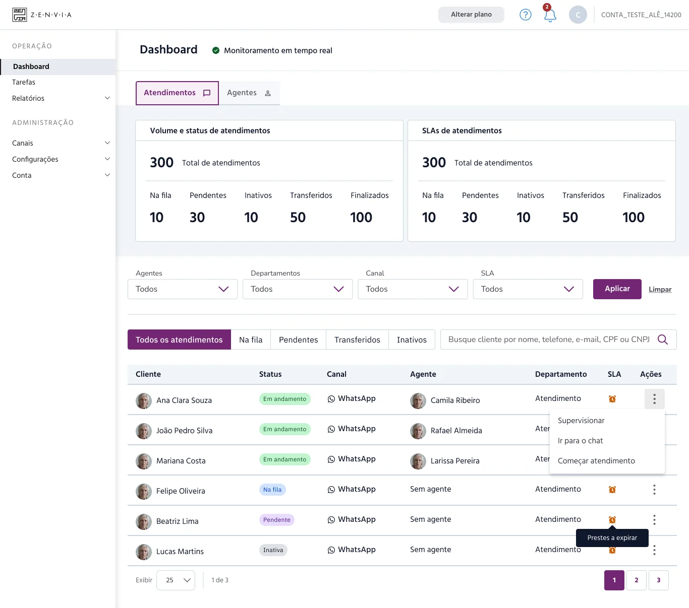
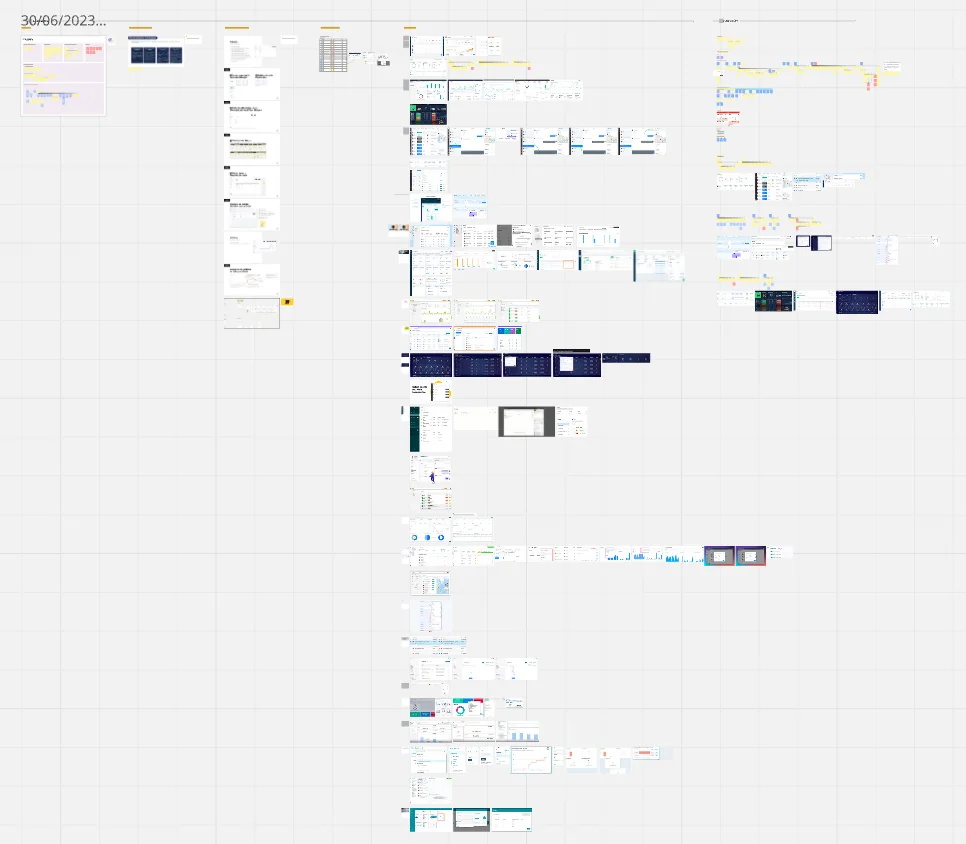
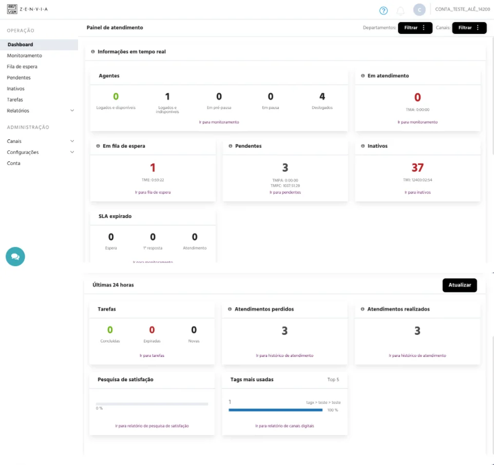
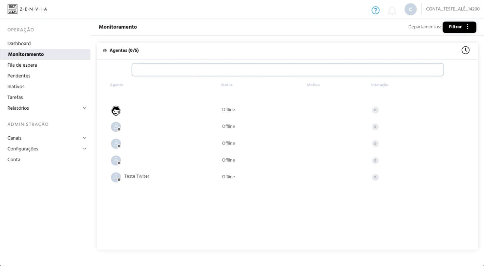

Discovering what metrics truly matter to managers and redesigning the dashboard around clear, actionable information.

Discovery included interviews with five participants with visual impairments. Proposed dashboard components follow research findings.
🗨️ Context & Background
This project was part of a broader initiative to improve the platform experience, including the implementation of accessibility enhancements - a case study on this accessibility work is available here.
At the start of this phase, we identified an important uncertainty: we didn’t know if managers actually valued the information displayed in the admin dashboard area, nor which real-time (or static) metrics would be most relevant and meaningful to them in that space.
🔍 Project Discovery
Considering the initial challenges and uncertainties, the main goals of the research were to:
- Understand the main activities and daily workflow of managers using the admin platform.
- Investigate the context of use related to the admin dashboard.
- Assess the satisfaction level with the current dashboard.
- Explore and identify which key metrics are presented in competitor or similar products.
To achieve this, we conducted an exploratory research using a qualitative approach, combining benchmarking, behavior analysis, user journey mapping via FullStory (Product Analytics platform), and user interviews.
An important aspect of this discovery phase was the opportunity to interview five participants with visual impairments. Their feedback was essential for identifying accessibility gaps and guiding inclusive design improvements within the platform.
Below is an example of how I organized and structured the dashboard content based on the research findings, focusing on clarity, usability, and quick access to key metrics.


📌 UX Outcomes
📊 Views
- Home: Monitoring dashboard for ongoing requests, with relevant metrics.
- Overview: Modular dashboard with general performance metrics.
⚙️ Features, Tasks & Components
AI Conversation Summaries:
- Summaries in topic format for monitored and pending messages.
- Update the monitoring screen interface where admins read messages.
- Preferably integrated with the dashboard redesign and accessibility improvements.
- Option to usability test this feature with a low-fidelity prototype first.
Content Personalization:
- Data selection controls at the top of the page (like filters or dashboard settings).
- Reorder and reposition modules within the modular dashboard.
Charts:
- Review and improve text, colors, and interaction behavior.
UX/UI Improvements in Tables:
- Sort ongoing requests by agent workload (e.g., 3/10 active chats).
- Dedicated views for:
- Monitoring
- Waiting Queue
- Pending
- Inactive
- Transferred
- Improve and customize filters for each view.
- Add search functionality.
- Better visibility for agent status.
- (Optionally) Show break time countdown.
- Improve visual separation of elements.
- Enhance ticket click interactions (modals, conversation view, etc.)
Accessibility & Chat:
- Apply the same accessibility improvements from the agent chat to the admin chat.
- Internal admin chat feature (future planning).
- SLA visual indicator redesign.
- Visual request for assistance when an agent asks for help.
- Ability for admins to join conversations.
- Takeover option (remove an agent from a conversation).
- (Optionally) Ticket closure reasons.
🗂️ Filters
- Agent
- Chat status
- Ticket ID
- Date & period
- Department
- Tags
- SLA
- Customer
- Keyword
- Channel
- Customer satisfaction
- Agent login / break time
- Number of ongoing requests
🗺️ New Content Organization / Information Architecture
Categories:
- Team
- Conversations:
- Ongoing (easier supervision of active conversations)
- Pending
- Waiting Queue
- Inactive
- Transferred
🎯 Prioritization
Monitoring Dashboard (operational control):
- UX/UI improvements for tables (Monitoring, Waiting Queue, Pending, Inactive, etc.)
- AI-generated conversation summaries in topic format for monitored conversations.
- Plan for internal admin chat integration.
- Graphical data visualizations.
Overview (Insights) Modular Dashboard:
- Improvements and adjustments to the general filters in the modular dashboard.
- Content personalization features (data selection, module repositioning).
💻 Interface Design
After gathering valuable insights from the discovery phase, we translated them into an interface that better reflected how users interact with the platform. This included usability improvements across components, content structure, copy, and new features along with key accessibility updates to ensure a more inclusive experience.
Before




After

💭 Final Thoughts & Personal Learnings
This project was a great opportunity to dive deep into the real needs of managers using the platform, and it taught me a lot about the importance of questioning assumptions — even in areas of the product that seem “solved.”
By combining qualitative research, product analytics and benchmarking, we not only delivered a more accessible and usable dashboard, but also gained clarity on what actually matters to users in their day-to-day workflow.
More than redesigning a screen, this case reinforced for me how essential it is to stay close to users, validate hypotheses early, and let insights guide product decisions. These learnings will definitely shape the way I approach future projects.